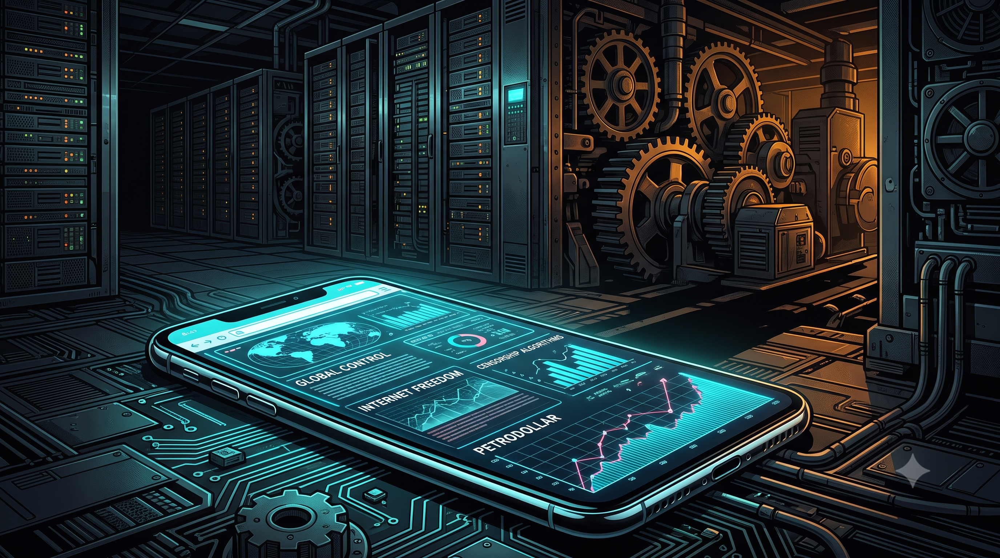

A Realidade por Trás do Código Social
Série: A Ilusão da Interface

Vivemos sob a constante ilusão de que o mundo é guiado por narrativas dramáticas, sociedades secretas e conspirações mágicas. Mas a realidade do poder global é muito mais burocrática, corporativa e pragmática. De lobbies políticos no congresso a acordos históricos de "petrodólares" e algoritmos matemáticos desenhados para reter sua atenção, os verdadeiros motores do nosso tempo operam à luz do dia.
Esta página, datada de 7 de outubro de 2027, funciona como a introdução e o índice da série A Ilusão da Interface: Do Petróleo ao Algoritmo. Em três episódios semanais lançados ao longo de outubro de 2027, com um apêndice especial em novembro de 2027, fazemos um paralelo entre a arquitetura de software e a organização social: como criamos "frontends" (teorias da conspiração, narrativas morais) para lidar com a exaustão de compreender um "backend" financeiro e geopolítico brutalmente complexo.
Seja você um analista atento às engrenagens do mercado financeiro ou um jovem tentando compreender como sua atenção é monetizada nos feeds virtuais, esta série convida a desligar as abstrações fáceis e ler o código real do poder.


Cronograma de Lançamento: Apresentação em 07/10/2027; Novos artigos publicados semanalmente às quintas-feiras, de 14/10/2027 a 04/11/2027.